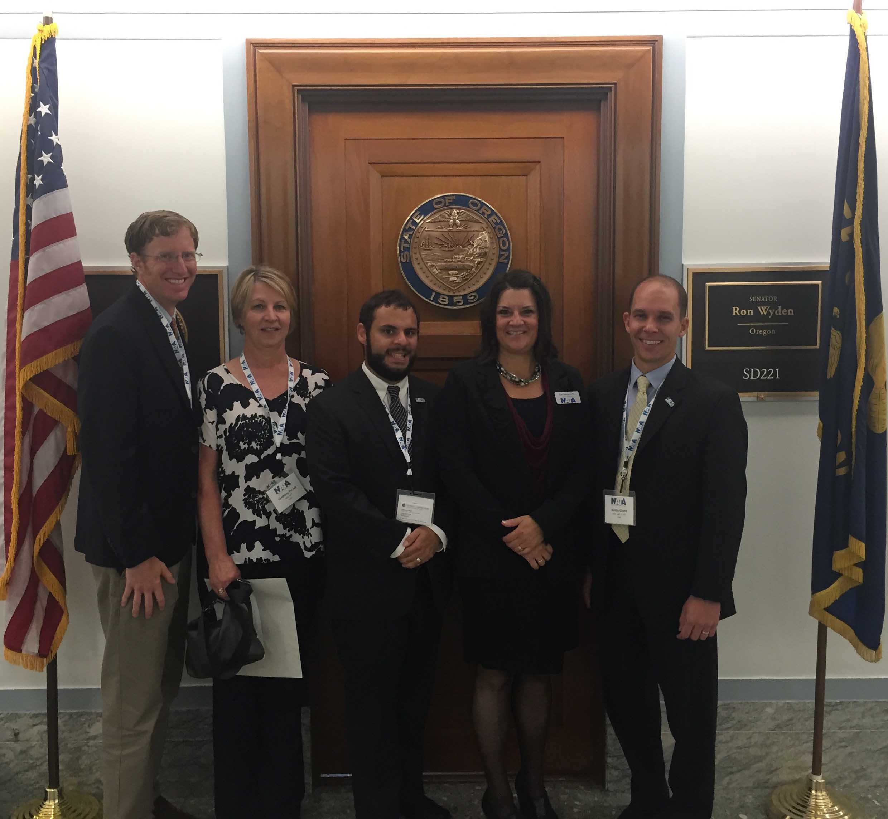

 Washington, DC. - As part of the NATA 67th Annual Clinical Symposia and AT Expo in Baltimore, Maryland over 400 ATs representing 48 states traveled to Capitol Hill to meet with members of Congress and their staff. The primary goal was to advocate for two key pieces of legislation:
1. H.Res 112 / S. Res. 83: Secondary School Student Athlete Bill of Rights
2. H.R. 921 / S. 689: Sports Medicine Licensure Clarity Act
Representing Oregon at Capitol Hill Day were Cari Wood, AT at Redmond High School and District 10 Director; Kim Terrell, Associate Director of Athletic Medicine at the University of Oregon; Brent Marshall, Assistant Professor at University of Western States and AT at David Douglas High School; Sam Johnson, Clinical Assistant Professor at Oregon State University and OATS President; and Dustin Girard, owner of Profound Strength.
The Oregon AT delegation met with legislative staff for Senators Jeff Merkley and Ron Wyden in the morning. During the afternoon Cari Wood met with Representative Greg Walden, Brent Marshall met with a member of Representative Earl Blumenauer’s staff, and Kim Terrell, Sam Johnson, and Dustin Girard met with a legislative assistant for Representative Peter DeFazio.
According to the NATA, the Sports Medicine Licensure Clarity Act “clarifies medical liability rules for athletic trainers and medical professionals to ensure they are properly covered by their malpractice insurance while traveling with athletic teams in another state.” Representatives Walden, Bluemenauer, and DeFazio all signed on as sponsors following Capitol Hill Day. Representative Kurt Schrader was already a sponsor of the bill. The bill passed the House on September 12 and was sent to the Senate.
The Secondary School Student Athlete Bill of Rights is a resolution that according to the NATA, “establishes 10 best practices for making secondary school athletics safer.” Currently, Representatives Bluemenauer and DeFazio are sponsors of this resolution.
Additionally, the ATs from Oregon brought up the need for ATs to be available to all athletes – not just those associated with professional and college sports. The ATs stressed that only around 40% of high schools in Oregon have an AT available to care for athletic injuries and medical conditions, which leaves many of Oregon’s most vulnerable athletes – adolescent athletes - without access to the services of an AT.
If you would like to participate in the NATA's next Capital Hill Day click here for more information on future events.